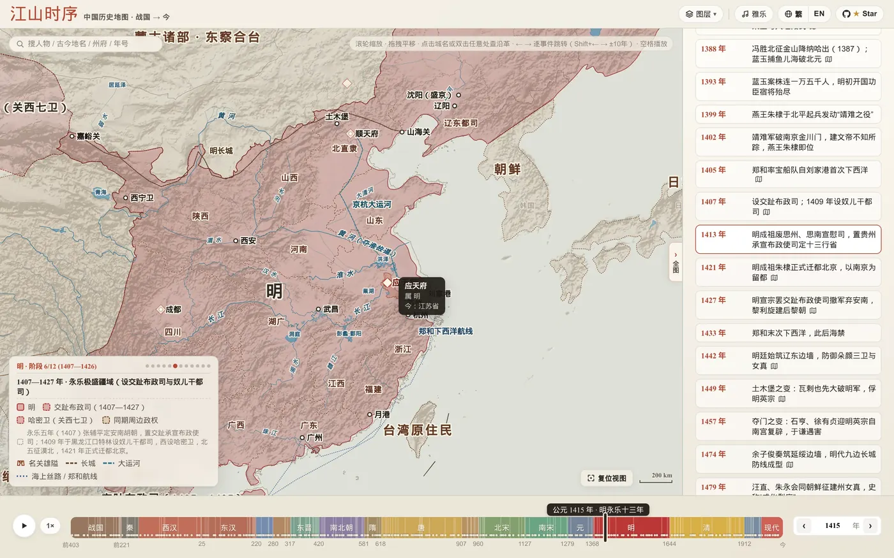
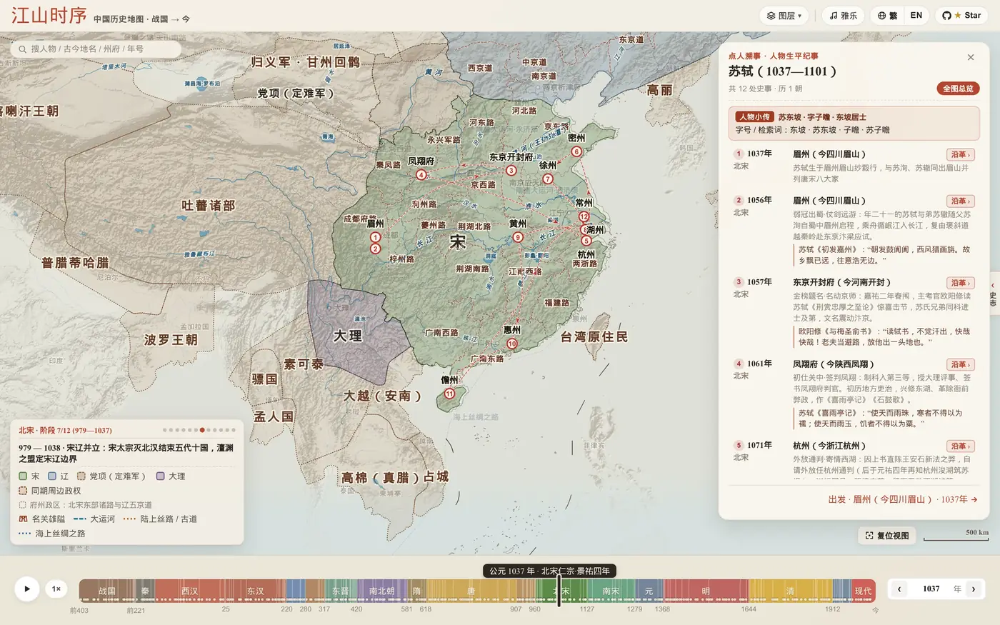

是什么
江山时序（Chronicles of the Realm）是一个纯静态网页，一张宣纸设色风格的中国历史交互地图，时间跨度从公元前 403 年（《资治通鉴》开篇的三家分晋）一直到今天。拖动底部时间轴，疆域、州郡政区、水系、长城运河会跟着年份变化；点任意古城可以看它两千多年的政区沿革和发生过的大事；搜一个历史人物，可以在地图上沿着他的一生走一遍。
项目本身也很“Agent 友好”：地点和年份写进网址就能直接定位（不需要经纬度），仓库里附带零依赖的本地 MCP Server、一个 Agent Skill 和浏览器端 JS API，可以让大模型把诗词或史料直接“落”到地图上。
在线版：deanchen.me/jiangshan-map（GitHub Pages 托管，robots.txt 对所有爬虫 Allow，2026-11-03 核）。作者另写了一篇幕后自述：从历史课本里的插图，到 GitHub 1k star（本站未逐段核读 ⚠️）。
仓库快照（2026-11-03 12:50 UTC+8 核）
| 项 | 值 |
|---|---|
| Star / Fork | 3,618 / 431 |
| 最近推送 | 2026-11-03 03:20（UTC+8）；最新提交 68b6db7「feat(lore): balance Southern Dynasties, Ten Kingdoms, Late Tang & Western Han events (#229)」 |
| 创建 | 2026-07-24（UTC+8） |
| 提交 / 贡献者 | 约 272 次提交；作者 268 次，另有 4 位贡献者各 1 次 |
| 语言 / 许可 | JavaScript；GPL-3.0（另有数据例外，见下） |
四种玩法
一、拖时间轴：看天下分合
多个政权同屏对峙（战国七雄、三国、南北朝、五代十国、宋辽夏金……），鼠标停在图例上就高亮对应政权。每次重大开疆或失地，版图切换时会留下上一阶段的“朱砂虚线残影”，方便对比得失。时间轴同步显示当年在位帝王和年号；放大后悬停州郡能看到政区归属与今省对照，还有一个把现代省界投影到古图上的“透视镜”。黄河改道、古湖消长、长城、大运河、丝路、郑和航线也随年代变化。

二、点地溯源：一座城的两千四百年
点古城或名关会展开一张卡片：顶部是这座城的“判词”和小传，下面是从秦郡、汉刺史部、唐道、宋路到元明清行省、现代省市的沿革表，标出哪些朝代在此建都，每个朝代下面嵌着当地发生的大事；点事件，时间轴和版图就跳回那一年。另有函谷关、潼关、玉门关等名关，以及赤壁、兰亭、岳阳楼等诗词名胜和古战场可以检索。
三、点人溯事：重走古人行迹
搜索秦始皇、张骞、诸葛亮、玄奘、李白、苏轼、王阳明等人物，地图会用弧线串起他们一生的行迹。逐站切换时，年份、在位君主和版图跟着变；比如看秦灭六国，六国会一步步并入秦的版图。每站配有《史记》、《出师表》或唐宋名篇的原句。

四、彩蛋：舆图寻址小试
地图隐去城名，十道题给出“西汉时期的姑臧”之类的古地名和掌故线索，你在图上扎针，按距离计分，最后授予“太史令 · 舆图大家”“职方郎中”等官阶封号。
深链、嵌入与快捷键
- 深链：
?year=741&place=长安直接打开某年某地；?year=763&place=剑外,巴峡,巫峡,襄阳,洛阳画同年多站路线（杜甫“即从巴峡穿巫峡”）；?year=1079,1080,1094,1097&place=湖州,黄州,惠州,儋州画跨年路线；?person=sushi打开人物行迹；?quiz=locate开小游戏；?lang=en/zh-tw切换语言。 - 嵌入：网址加
&embed=1放进 iframe，只保留地图和精简时间轴；from/to限定时间范围，lock=1锁定年份，autoplay=1自动播放。 - 快捷键：
/或 Cmd/Ctrl+K 搜索，←/→ 跳关键节点，空格自动播放，Esc 关闭卡片。
给 AI Agent 用：MCP、Skill、浏览器 API
作者的设计思路是：模型不用猜经纬度，只要从诗词或史料里推出 year 和 place 两个参数，地图负责解析地名、定位、渲染和弹出沿革卡片。仓库提供四种接入方式：
llms.txt：机器可读的说明，包括深链协议和“先定年份、再定地点（同名异地消歧）”的推理步骤。- 本地 MCP Server（
scripts/mcp_server.js，stdio，零依赖），提供inspect_place、inspect_person、search_atlas三个工具。本站 2026-11-03 在 Node 24 下实测：inspect_place(year=819, place=蓝关)返回“唐宪宗·元和十四年”、解析为“蓝田关”、今“陕西西安蓝田”、属关内道 ✅。 - Agent Skill（
skills/jiangshan-atlas/SKILL.md），附一个 CLI 出图脚本jiangshan.py（本站未实测出图 ⚠️）。 - 浏览器 API：页面挂载
window.atlasAPI（locate / inspect / resolvePlace / openPerson / search），在支持 WebMCP 的浏览器里通过navigator.modelContext注册 3 个工具（未实测 ⚠️）。
本地运行与 GeoJSON 导出
纯静态网页，克隆后 python3 -m http.server 就能跑。几何数据是拓扑去重后的紧凑编码；node scripts/export_geojson.js 可以导出标准 GeoJSON（EPSG:4326），范围是公元前 403 年至 1948 年，不含之后年份和现代省界。本站实测导出 195 个文件，其中疆域阶段快照 187 个 ✅；另有一个按坐标和年份查询“当时属于哪个政权、哪个政区”的小工具 jiangshan-locate.js，以及 Leaflet 示例页。
数据来源与许可
- 代码与项目：GPL-3.0，Copyright © 2026 DeanChensj。改了再发布要以 GPL-3.0 开源。
- 例外：源自 CHGIS V6（哈佛燕京学社与复旦大学）和 Hartwell China Historical GIS 的府州郡边界、战国疆域数据不适用 GPL-3.0，仍受原始条款约束，只限学术、非商业用途。商业项目复用导出的 GeoJSON 前要先剔除或另行取得授权 ⚠️。
- 参考与素材：谭其骧《中国历史地图集》、CHGIS、Hartwell、aourednik/historical-basemaps（GPL-3.0）；现代省界参考 DataV GeoAtlas；古琴录音来自 Wikimedia Commons 公有领域。
- 作者明确说明：历史疆域与政区边界是示意性近似，不是测绘边界。
核对与 ⚠️ 注记
- 数字对不上：GitHub 仓库简介写“164 个疆域快照”，
llms.txt写“188 幅快照、485 条编年大事、694 处城池地标”，本站导出（截至 1948 年）得到 187 个快照。项目更新很快，简介应该是旧数字 ⚠️。 - “单次查询 <5ms”、“百余位历史人物行迹”等说法未逐项核实 ⚠️。
- 史实准确性（疆域、事件年份、人物行迹）本站没有逐条校勘；作者说边界是示意，并有史料校勘规范（CONTRIBUTING） ⚠️。
- 仓库主要由作者一人提交（268/272），社区贡献很少。
怎么用 / 对我们的启发
- 读史读诗时随手查：把“某年 + 某地”拼进网址就能看当时的版图和沿革，适合配合课本、通鉴或诗词阅读。
- 给 Agent 一个“语义参数”接口：与其让模型输出坐标，不如只让它输出年份和地名，由程序负责解析，模型更不容易出错。这个模式也能用到其他“时间 + 地点”类可视化 ⚠️ 推断。
- 注意数据许可分层：代码是 GPL，但部分底层数据只限非商业。复用前要按代码、数据、素材分开检查。
附录 A：作者中文 README 全文（README_ZH.md，逐字收录）
English · 简体中文
一幅可以拖动时间、点城读史、追随古人足迹的中国历史交互舆图（公元前 403 年三家分晋 — 今）
立即在线把玩 → https://deanchen.me/jiangshan-map/
作者自述：从历史课本里的插图，到 GitHub 1k star：「江山时序」背后的故事
[动图演示 hero_demo_zh.webp（约 6.5 MB）未转载，见原仓库]

这幅地图好玩在哪里？
读史书、背古诗词时，你是否也常有这样的困惑： - 「六朝古都建康、苏东坡被贬的黄州、韩愈勒马的秦岭蓝关、岳飞北伐的朱仙镇，放在今天的地图上到底在哪儿？」 - 「长安在两千年里换过多少个名字？这片土地上先后发生过多少场改写国运的大事？」 - 「《资治通鉴》开篇的三家分晋与战国七雄、秦王嬴政十年扫六合、汉武帝打通河西走廊、盛唐安西四镇与王玄策破中天竺、元代设宣政院辖西藏、晚清曾纪泽收复伊犁，再到近现代版图从『秋海棠』变为『雄鸡』，疆域是怎么一步步演变的？」
「江山时序」 把从公元前 403 年（《资治通鉴》开篇 · 三家分晋）至今 两千四百余年、18 个历史时期的多阶段疆域与州郡政区舆图、历代古城、天下名关、诗词名胜与古战场、编年大事及帝王年号纪年装进了一张宣纸设色古舆图里。你不需要翻检厚重的历史地图册，只需拖动滑块、点点城池，就能在时空之间自由穿梭。
玩法一：拉动时间轴看天下分合、查在位帝王、比古今省界
- 同屏看多政权对峙：从战国七雄（秦、楚、齐、燕、赵、魏、韩）与周、越、巴蜀、中山、义渠并立，到汉末三国群雄割据（袁绍、曹操、刘备、孙权、公孙氏辽东），再到南北朝、五代十国与宋、辽、西夏、大理、金、蒙古，都以高对比度宣纸设色同屏呈现。鼠标移到左下角图例的政权名字上，对应政权立刻高亮；点一下直接聚焦过去。
- 多阶段疆域演进与「虚线残影」对比：每一个重大开疆或失地节点——如前 316 年司马错灭巴蜀、前 300 年燕将秦开破东胡辟辽东五郡、43 年马援平交趾立铜柱、238 年司马懿平公孙渊收辽东、635 年李靖平吐谷浑、648 年置安西四镇与王玄策破中天竺、1288 年元设宣政院直辖西藏、1404 年明置哈密卫与关西七卫、1643 年大顺大西起兵、1673 年三藩之乱、1881 年曾纪泽签《中俄伊犁条约》收复伊犁、1898 年列强强租胶州湾/旅大/威海卫/九龙新界，乃至 1945 年抗战胜利台湾光复（“秋海棠”重光）与 1946 年外蒙古独立（版图由“秋海棠”变为“雄鸡”）——点击编年事件或阶段圆点，版图即刻切换并浮现上一阶段的朱砂虚线残影，盈亏得失一目了然。
- 当朝在位帝王与年号同步显示：时间轴实时内联展示当年在位君主（庙号 / 谥号 + 姓名 + 在位起止年，如
汉武帝 刘彻、唐太宗 李世民、清圣祖 玄烨）及历代年号纪年。 - 历代州府悬停即查 & 古今透视镜：一级政区采用拓扑去重与宣纸衬底双重描边（Parchment Casing）；放大地图悬停任意州郡（如明代的「应天府」「顺天府」、三国的「荆州」）即可查看政区归属与今省对照，还可打开 「透视镜」 在古舆图上直接投射现代省界。
- 水系古泽与千年工程随年代流转：拉动时间轴时，黄河历代改道、云梦泽与罗布泊（蒲昌海）等古湖消长，以及战国秦汉明长城、隋唐与京杭大运河、丝绸之路、郑和航线均随当朝版图同步演进。
玩法二：点开任意一座城或名关，读它两千四百年的身世与风云
在地图上直接点击任意古城、名关（或者双击地图任意位置），就会展开一张 「点地溯源」 卡片：
- 名城风华题记与古今政区沿革：卡片顶部呈现该城专属的名城判词与千年历史小传；下方沿革表从战国七雄与秦朝的郡、汉朝的刺史部、唐朝的道、宋朝的路，一路看到元明清的行省与府州，直至现代省市；哪几个朝代曾在此建都（王朝都城 徽章）与各朝代治所掌故一目了然。
- 看这里发生过什么大事：每个朝代行下方直接内嵌当年发生在此地的定点地标大事（如咸阳的「商鞅变法」「秦王扫六合」、樊城的「关羽水淹七军」、长安的「玄武门之变」、临安的「风波亭岳飞蒙难」）。点一下右上角的 「史事纪要」 胶囊，还能一键筛出有大事发生的朝代；点击任意一条事件，时间轴和地图版图立即穿越回那一年！
- 探访天下名关与诗词名胜：地图以专属汉阙城楼图标标出函谷关、潼关、剑门关、雁门关、玉门关、阳关、山海关等天下雄关（附山脉水系扼守形势详解），并收录赤壁、垓下、五丈原、兰亭、岳阳楼、滕王阁、蓝关、楼兰、蒲昌海（罗布泊）、热海（伊塞克湖）等诗词名胜与古战场，支持直接检索落针。
玩法三：点人溯事 —— 搜任意帝王将相与文豪名僧，重走万里青史路
点开左上角 万能搜索框（附单条可轮换人物示例与 长安 / 赤壁 / 贞观 / 霍去病 快捷检索词，亦可直接输入 曹操、司马迁、岳飞、郑和 等任意历史人物），即可展开 「点人溯事」 生平纪事面板，在山河版图上以古籍游丝弧线串起其一生行迹：
- 秦始皇一统六国行迹（前 238 — 前 221 年）：从咸阳亲政平乱、王翦攻赵邺城拉开序幕，到内史腾灭韩、王翦克邯郸灭赵、易水破燕拔蓟城、王贲水灌大梁灭魏、王翦六十万大军破楚、远征辽东灭燕平代，直至南下临淄齐王建出降、六国一统——每点下一处史事，地图上的韩、赵、魏、楚、燕、齐便随之一步步并入大秦版图！
- 张骞凿空西域行迹（前 138 — 前 126 年）：从长安出发，被匈奴羁留十余载不改其志，持汉节一路走到大宛、康居、大月氏。
- 诸葛亮出山北伐行迹（207 — 234 年）：从襄阳隆中三顾茅庐、柴桑联吴破曹、溯江入蜀、白帝托孤、五月渡泸南征，到进驻汉中上《出师表》、祁山北伐与五丈原秋风星落。
- 玄奘西行求法行迹（627 — 645 年）：孤身出玉门关，涉莫贺延碛、越凌山雪隘、渡印度河，抵那烂陀寺求法、赴曲女城讲论，载誉归唐。
- 李白仗剑壮游行迹（701 — 762 年）：自安西碎叶入蜀居青莲，二十四岁仗剑出三峡、漫游扬州散金三十万、酒隐安陆、仰天大笑入长安供奉翰林、洛阳逢杜甫、白帝城遇赦放舟，终老当涂青山。
- 苏轼宦海贬谪行迹（1056 — 1101 年）：从出川赴京、密州超然台赏月，到乌台诗案后贬谪黄州写下《赤壁赋》，再到惠州、跨海远谪海南儋州。
- 王阳明心学立功行迹（1472 — 1529 年）：从余姚瑞云楼降生、京师抗疏下诏狱，到贬谪贵州修文「龙场悟道」始倡知行合一、庐陵讲学、巡抚南赣破山贼、三十五日生擒宁王朱宸濠、绍兴天泉证道揭出「致良知」，直至总督两广归途舟次南安留下「此心光明，亦复何言」。
每切换上一处 / 下一处史事（点击面板 ‹ / ›、键盘方向键或按空格键自动演进），底下的历史年份、在位君主与年号、王朝版图都会跟着古人的脚步同步流转，单段朱砂飞白弧线精准高亮当前行程，并附有《史记》《出师表》《传习录》或唐宋千古名篇原句。
玩法四：彩蛋 · 舆图寻址挑战 —— 测测你在古代能当几品官？
觉得自己历史地理很熟？点开左上角 搜索框 引导栏右下角的 「古地名小试 ›」（或直接搜 小试 / 寻址 开启 「舆图寻址 · 古地名小试」）试试身手：
- 当朝掌故线索 + 舆图盲猜扎针：地图隐去所有城池标注，十道题按梯度递进，给出「西汉时期的姑臧（凉州）」「南宋时期的泉州」或「六朝古都建康」，并附上当朝掌故与史事线索（不剧透现代城市名），凭你的山河水系直觉在舆图上落针预览、点击图钉内嵌的「✓ 确定」揭晓同心圆环距离得分！
- 十道题答完，系统会根据总分授予你 「太史令 · 舆图大家」「职方郎中」「州郡从事」 等传统官阶封号。
图：西汉前 121 年 · 舆图寻址挑战模式预览（见原仓库）

实用快捷键与任意门（Deep Links）
快捷键一览
| 操作 / 按键 | 作用 |
|---|---|
/ 或 Cmd/Ctrl + K |
唤醒左上角万能搜索框：支持搜古今城池（咸阳/长安/洛邑/东京汴梁）、在位帝王（汉武帝/刘彻/李世民/朱元璋）、帝王年号（元狩二年/贞观/永乐）、诗词名胜与古战场（赤壁/五丈原/蓝关/兰亭）、天下名关（函谷关/剑门关/玉门关）、历史大事（长平之战/水淹七军/玄武门之变）或人物行迹 |
← / → 或底部 ‹ / › |
键盘左右键与底部 ‹ / › 按钮直接跳往上 / 下一关键历史阶段、事件节点或行迹站点（按住 Shift + ← / → 进退 10 年） |
Space（空格键） |
自动播放 / 暂停历史演进（行迹模式下自动巡礼） |
Esc |
一键关闭弹窗卡片、清除搜索高亮或自定义多站路线 |
单击古城 / 双击地图 |
打开该地从战国到近现代的 18 时期「点地溯源 + 史事纪要」卡片 |
悬停 / 点击图例色块 |
悬停单独高亮该政权疆域；点击自动缩放聚焦至该政权 |
一键直达链接（适合分享给朋友）
你可以直接在网址后面加上参数，把某个特定的历史瞬间分享给朋友：
- 看某一年或重大疆域变迁：?year=-403（《资治通鉴》开篇 · 三家分晋） / ?year=-121（西汉霍去病开河西） / ?year=648（唐置安西四镇与王玄策破中天竺） / ?year=1288（元改宣政院直辖西藏） / ?year=1881（曾纪泽签约收复伊犁） / ?year=1945（抗战胜利台湾光复 · “秋海棠”重光）
- 看某场大战：?year=-260&place=长平（长平之战） / ?year=208&place=赤壁（赤壁之战） / ?year=383&place=淝水（东晋前秦 · 淝水之战）
- 查某座古城或名胜的千年故事：?year=741&place=长安（长安/西安） / ?year=1415&place=应天府（建康/应天/南京） / ?year=819&place=蓝关（韩愈「雪拥蓝关马不前」）
- 画一条自定义诗词/行军路线：?year=763&place=剑外,巴峡,巫峡,襄阳,洛阳（杜甫《闻官军收河南河北》同年归乡路） / ?year=1079,1080,1094,1097&place=湖州,黄州,惠州,儋州（苏轼「黄州惠州儋州」跨年贬谪路）
- 展阅历史人物生平与行迹：?person=qinshihuang（秦始皇一统六国） / ?person=zhangqian（张骞凿空西域） / ?person=zhugeliang（诸葛亮出山北伐） / ?person=xuanzang（玄奘西行求法） / ?person=libai（李白仗剑壮游） / ?person=sushi（苏轼宦海贬谪） / ?person=wangyangming（王阳明心学立功）
- 直接开一局挑战：?year=-121&quiz=locate（舆图寻址挑战）
- 切换繁简与英文界面：?lang=zh-tw（繁体中文） / ?lang=en（英文版）
嵌入到你的网页
把地图的任意画面放进博客文章、Notion 页面或课程网站：
- 打开江山时序，调到你想展示的画面（某一年、某个政权档案、某个地点卡片或某个人物的轨迹）。地址栏会实时反映当前画面。
- 复制网址，在后面加上
&embed=1。 - 放进
<iframe>：
<iframe
src="https://deanchen.me/jiangshan-map/?embed=1&year=1104&trace=101.778,36.617&from=1072&to=1126"
width="100%" height="480" loading="lazy" style="border:0"
title="江山时序 · 公元1104年 北宋"></iframe>
嵌入后的地图会隐藏网站的导航和侧栏，只保留地图、精简时间轴、左上角的标题牌、右上角的「在江山时序中打开 ↗」链接，以及「历史疆域为示意性近似」的说明。读者需要先点一下地图才能拖动和缩放，滚动文章时不会被地图卡住。
| 参数 | 作用 |
|---|---|
embed=1 |
开启嵌入模式（必填） |
year、polity、person、stop、trace、lang |
和上面的分享链接相同 |
from=1072&to=1126 |
把时间轴限定在这个范围，时间轴会放大到只显示这一段 |
lock=1 |
把地图固定在 year 指定的年份，并隐藏时间轴 |
autoplay=1 |
自动逐站播放人物轨迹（配合 person），或自动播放时间轴 |
微信公众号、知乎、小红书不支持网页嵌入，在这些平台请直接分享链接。
AI Agent、MCP & LLM 接入指南
「江山时序」原生支持作为大语言模型（LLM）、MCP 客户端与 AI Agent 的历史地理可视化工具。模型无需猜测经纬度坐标，只需从诗词或史料中提取 year（年份） 与 place（古今地名） 两个语义参数，地图即可自动完成地名解析、镜头聚焦、疆域政区渲染、轨迹连线与「点地溯源」卡片展开：
- 机器可读说明文档：
llms.txt - 零依赖本地 MCP Server (
stdio)：scripts/mcp_server.js—— 可直接接入 Claude Desktop、Cursor、Windsurf 或 Gemini CLI 的mcpServers配置（0 第三方依赖，单次查询<5ms）：json { "mcpServers": { "jiangshan-atlas": { "command": "node", "args": ["/absolute/path/to/jiangshan-map/scripts/mcp_server.js"] } } }原生提供 3 个 MCP 工具： inspect_place({ year, place, lang? })：查询任意年份与古今地名/多站路线的在位君主年号、所属政权、州郡政区、现代省市、两千四百年沿革判词与可点击深链 URL。inspect_person({ person, stop?, lang? })：查询历史人物或历代帝王的生平纪事时空落点与深链 URL。search_atlas({ query, limit?, lang? })：跨全朝代检索古城、地标、名关、历史人物、帝王年号与编年大事。- 开箱即用 Agent Skill：
skills/jiangshan-atlas/SKILL.md（含零依赖 CLI 渲染脚本skills/jiangshan-atlas/scripts/jiangshan.py）bash # 一键安装至 Claude Code / Gemini / Jetski 全局技能目录： mkdir -p ~/.claude/skills ~/.gemini/config/skills && cp -r skills/jiangshan-atlas ~/.claude/skills/ && cp -r skills/jiangshan-atlas ~/.gemini/config/skills/
1. 零坐标双参数 URL 协议（0D 单点 / 1D 同年路线 / 4D 跨年路线）
| 模式 | URL 格式示例 | 自动渲染效果 |
|---|---|---|
| 单点寻址 (0D) | ?year=819&place=蓝关(韩愈「雪拥蓝关马不前」) |
自动跳转至唐宪宗元和十四年（819 年），精准落针秦岭蓝田关，展开两千四百年政区沿革卡片 |
| 同年多站路线 (1D) | ?year=763&place=剑外,巴峡,巫峡,襄阳,洛阳(杜甫「即从巴峡穿巫峡，便下襄阳向洛阳」) |
自动在 763 年唐代版图上绘制 1 → 5 朱砂弧线轨迹并自适应缩放视野，点击任意站点即可查看历代沿革 |
| 跨年多站路线 (4D) | ?year=1079,1080,1094,1097&place=湖州,黄州,惠州,儋州(苏轼「问汝平生功业，黄州惠州儋州」) |
year[i] 与 place[i] 一一对应，地图路标自动标注 湖州 (1079) → 黄州 (1080) → 惠州 (1094) → 儋州 (1097)，点击任意站点即可同步切换至该年份版图 |
2. CLI 一键出图（供 Agent 工具调用）
# 单点诗境落针截图
python3 skills/jiangshan-atlas/scripts/jiangshan.py --year 819 --place 蓝关 --out /tmp/languan_819.png
# 同年多站轨迹截图
python3 skills/jiangshan-atlas/scripts/jiangshan.py --year 763 --place 剑外,巴峡,巫峡,襄阳,洛阳 --out /tmp/dufu_763.png
# 跨年多站轨迹截图
python3 skills/jiangshan-atlas/scripts/jiangshan.py --year 1079,1080,1094,1097 --place 湖州,黄州,惠州,儋州 --out /tmp/sushi_exile.png
3. 浏览器端 JavaScript API（window.atlasAPI）与浏览器内建 WebMCP（navigator.modelContext）
在浏览器自动化环境（Playwright）或支持 WebMCP 协议的 AI 浏览器（navigator.modelContext）中，页面会自动注册 jiangshan_locate、jiangshan_inspect、jiangshan_open_person 三个工具，并挂载 window.atlasAPI：
- window.atlasAPI.locate({ year, place, zoom? })：驱动地图跳转并渲染单点落针或跨年轨迹，同时返回结构化历史地理信息。
- window.atlasAPI.inspect({ year, place, person?, stop? })：只读查询指定时空点、多站路线或人物纪事的所属政权、州郡政区、现代省市、各站里程与标准分享链接。
- window.atlasAPI.resolvePlace(place, year?)：解析历代城池、天下名关、诗词名胜与古战场古今地名。
- window.atlasAPI.openPerson(person, stop?) & window.atlasAPI.search(query)：在地图上展开人物生平纪事或执行全局检索。
本地运行
项目为纯静态网页，无需安装任何依赖或构建工具，克隆后用任意静态服务器打开即可：
git clone https://github.com/DeanChensj/jiangshan-map.git
cd jiangshan-map
python3 -m http.server 8000
随后在浏览器打开 http://localhost:8000。
GeoJSON 导出（供 Leaflet / MapLibre / QGIS 使用）
程序内置的几何数据是拓扑去重的 VLQ 紧凑编码。如需在其他项目中使用矢量图层，可在本地生成标准 RFC 7946 GeoJSON（EPSG:4326，经度/纬度），输出到 geojson/，不纳入版本库。导出范围为公元前 403 年至 1948 年，不含此后年份及现代省界图层：
node scripts/export_geojson.js # 或：node scripts/export_geojson.js <输出目录>
snapshots/<id>.geojson：每个疆域阶段一个文件；每个要素带bbox，属性含layer（polity政权 /region一级政区 /prefecture州郡）、title、title_en、category、tint、anchor。index.json：各朝代阶段的起止年份from/to（负数为公元前，无公元 0 年）及对应快照文件。corridors.geojson（长城、运河、道路、海路）、settlements.geojson、milestones.geojson、neighbors.geojson，以及modern/（河流、湖泊、水系注记；appear/vanish表示古河道与古湖泊显示的起止年份）。
按坐标查询时无需加载全部阶段：geojson/jiangshan-locate.js 只加载 index.json 和覆盖该年份的那一个快照，再用包围盒预筛加点在多边形内判断。
const atlas = JiangshanLocate.create(); // 或 create({ base: '<geojson/ 目录的 URL>' })
const hit = await atlas.locate(118.78, 32.06, 1415); // 经度, 纬度, 年份
hit.polity.properties.title; // 明
hit.region.properties.title; // 南直隶
hit.prefecture.properties.title; // 应天府（本身是 GeoJSON Feature，可直接 L.geoJSON(hit.prefecture)）
导出后启动本地服务（python3 -m http.server 8000），打开 http://localhost:8000/geojson/demo.html 即可查看 Leaflet 示例：拖动年份滑块、点击地图，或打开 demo.html?year=1415&lon=118.78&lat=32.06 自动加载、高亮并缩放到该处。数据采用 GPL-3.0 协议，历史疆域为示意性近似。
致谢与开源协议
- 历史疆域与政区参考：谭其骧主编《中国历史地图集》、CHGIS（哈佛燕京学社与复旦大学中国历史地理信息系统）、Robert M. Hartwell 历史 GIS 数据集，以及 aourednik/historical-basemaps（GPL-3.0）。
- 现代省界参考：DataV GeoAtlas 开放行政边界数据。
- 古琴雅乐录音：Wikimedia Commons 公有领域古琴录音（《流水》《平沙落雁》《阳关三叠》《醉渔唱晚》《酒狂》）。
- 说明：地图中的历史疆域轮廓与州郡政区边界为示意性近似，旨在直观呈现各时期大致统治与管辖范围，非精确现代测绘边界。
- 参与贡献：参见 中文贡献指南 (
CONTRIBUTING_ZH.md)（English Contributing Guide）了解项目结构、史料校勘规范与自动化校验流程。 - 开源协议：采用 GPL-3.0（见 LICENSE）。Copyright © 2026 DeanChensj。
- 例外：源自 CHGIS V6 与 Hartwell China Historical GIS 的府州郡政区边界及战国疆域数据，仍受其原始条款约束（仅限学术、非商业用途），不适用 GPL-3.0。
附录 B：LICENSE（GPL-3.0）原文
展开 LICENSE
GNU GENERAL PUBLIC LICENSE
Version 3, 29 June 2007
Copyright (C) 2007 Free Software Foundation, Inc. <https://fsf.org/>
Everyone is permitted to copy and distribute verbatim copies
of this license document, but changing it is not allowed.
Preamble
The GNU General Public License is a free, copyleft license for
software and other kinds of works.
The licenses for most software and other practical works are designed
to take away your freedom to share and change the works. By contrast,
the GNU General Public License is intended to guarantee your freedom to
share and change all versions of a program--to make sure it remains free
software for all its users. We, the Free Software Foundation, use the
GNU General Public License for most of our software; it applies also to
any other work released this way by its authors. You can apply it to
your programs, too.
When we speak of free software, we are referring to freedom, not
price. Our General Public Licenses are designed to make sure that you
have the freedom to distribute copies of free software (and charge for
them if you wish), that you receive source code or can get it if you
want it, that you can change the software or use pieces of it in new
free programs, and that you know you can do these things.
To protect your rights, we need to prevent others from denying you
these rights or asking you to surrender the rights. Therefore, you have
certain responsibilities if you distribute copies of the software, or if
you modify it: responsibilities to respect the freedom of others.
For example, if you distribute copies of such a program, whether
gratis or for a fee, you must pass on to the recipients the same
freedoms that you received. You must make sure that they, too, receive
or can get the source code. And you must show them these terms so they
know their rights.
Developers that use the GNU GPL protect your rights with two steps:
(1) assert copyright on the software, and (2) offer you this License
giving you legal permission to copy, distribute and/or modify it.
For the developers' and authors' protection, the GPL clearly explains
that there is no warranty for this free software. For both users' and
authors' sake, the GPL requires that modified versions be marked as
changed, so that their problems will not be attributed erroneously to
authors of previous versions.
Some devices are designed to deny users access to install or run
modified versions of the software inside them, although the manufacturer
can do so. This is fundamentally incompatible with the aim of
protecting users' freedom to change the software. The systematic
pattern of such abuse occurs in the area of products for individuals to
use, which is precisely where it is most unacceptable. Therefore, we
have designed this version of the GPL to prohibit the practice for those
products. If such problems arise substantially in other domains, we
stand ready to extend this provision to those domains in future versions
of the GPL, as needed to protect the freedom of users.
Finally, every program is threatened constantly by software patents.
States should not allow patents to restrict development and use of
software on general-purpose computers, but in those that do, we wish to
avoid the special danger that patents applied to a free program could
make it effectively proprietary. To prevent this, the GPL assures that
patents cannot be used to render the program non-free.
The precise terms and conditions for copying, distribution and
modification follow.
TERMS AND CONDITIONS
0. Definitions.
"This License" refers to version 3 of the GNU General Public License.
"Copyright" also means copyright-like laws that apply to other kinds of
works, such as semiconductor masks.
"The Program" refers to any copyrightable work licensed under this
License. Each licensee is addressed as "you". "Licensees" and
"recipients" may be individuals or organizations.
To "modify" a work means to copy from or adapt all or part of the work
in a fashion requiring copyright permission, other than the making of an
exact copy. The resulting work is called a "modified version" of the
earlier work or a work "based on" the earlier work.
A "covered work" means either the unmodified Program or a work based
on the Program.
To "propagate" a work means to do anything with it that, without
permission, would make you directly or secondarily liable for
infringement under applicable copyright law, except executing it on a
computer or modifying a private copy. Propagation includes copying,
distribution (with or without modification), making available to the
public, and in some countries other activities as well.
To "convey" a work means any kind of propagation that enables other
parties to make or receive copies. Mere interaction with a user through
a computer network, with no transfer of a copy, is not conveying.
An interactive user interface displays "Appropriate Legal Notices"
to the extent that it includes a convenient and prominently visible
feature that (1) displays an appropriate copyright notice, and (2)
tells the user that there is no warranty for the work (except to the
extent that warranties are provided), that licensees may convey the
work under this License, and how to view a copy of this License. If
the interface presents a list of user commands or options, such as a
menu, a prominent item in the list meets this criterion.
1. Source Code.
The "source code" for a work means the preferred form of the work
for making modifications to it. "Object code" means any non-source
form of a work.
A "Standard Interface" means an interface that either is an official
standard defined by a recognized standards body, or, in the case of
interfaces specified for a particular programming language, one that
is widely used among developers working in that language.
The "System Libraries" of an executable work include anything, other
than the work as a whole, that (a) is included in the normal form of
packaging a Major Component, but which is not part of that Major
Component, and (b) serves only to enable use of the work with that
Major Component, or to implement a Standard Interface for which an
implementation is available to the public in source code form. A
"Major Component", in this context, means a major essential component
(kernel, window system, and so on) of the specific operating system
(if any) on which the executable work runs, or a compiler used to
produce the work, or an object code interpreter used to run it.
The "Corresponding Source" for a work in object code form means all
the source code needed to generate, install, and (for an executable
work) run the object code and to modify the work, including scripts to
control those activities. However, it does not include the work's
System Libraries, or general-purpose tools or generally available free
programs which are used unmodified in performing those activities but
which are not part of the work. For example, Corresponding Source
includes interface definition files associated with source files for
the work, and the source code for shared libraries and dynamically
linked subprograms that the work is specifically designed to require,
such as by intimate data communication or control flow between those
subprograms and other parts of the work.
The Corresponding Source need not include anything that users
can regenerate automatically from other parts of the Corresponding
Source.
The Corresponding Source for a work in source code form is that
same work.
2. Basic Permissions.
All rights granted under this License are granted for the term of
copyright on the Program, and are irrevocable provided the stated
conditions are met. This License explicitly affirms your unlimited
permission to run the unmodified Program. The output from running a
covered work is covered by this License only if the output, given its
content, constitutes a covered work. This License acknowledges your
rights of fair use or other equivalent, as provided by copyright law.
You may make, run and propagate covered works that you do not
convey, without conditions so long as your license otherwise remains
in force. You may convey covered works to others for the sole purpose
of having them make modifications exclusively for you, or provide you
with facilities for running those works, provided that you comply with
the terms of this License in conveying all material for which you do
not control copyright. Those thus making or running the covered works
for you must do so exclusively on your behalf, under your direction
and control, on terms that prohibit them from making any copies of
your copyrighted material outside their relationship with you.
Conveying under any other circumstances is permitted solely under
the conditions stated below. Sublicensing is not allowed; section 10
makes it unnecessary.
3. Protecting Users' Legal Rights From Anti-Circumvention Law.
No covered work shall be deemed part of an effective technological
measure under any applicable law fulfilling obligations under article
11 of the WIPO copyright treaty adopted on 20 December 1996, or
similar laws prohibiting or restricting circumvention of such
measures.
When you convey a covered work, you waive any legal power to forbid
circumvention of technological measures to the extent such circumvention
is effected by exercising rights under this License with respect to
the covered work, and you disclaim any intention to limit operation or
modification of the work as a means of enforcing, against the work's
users, your or third parties' legal rights to forbid circumvention of
technological measures.
4. Conveying Verbatim Copies.
You may convey verbatim copies of the Program's source code as you
receive it, in any medium, provided that you conspicuously and
appropriately publish on each copy an appropriate copyright notice;
keep intact all notices stating that this License and any
non-permissive terms added in accord with section 7 apply to the code;
keep intact all notices of the absence of any warranty; and give all
recipients a copy of this License along with the Program.
You may charge any price or no price for each copy that you convey,
and you may offer support or warranty protection for a fee.
5. Conveying Modified Source Versions.
You may convey a work based on the Program, or the modifications to
produce it from the Program, in the form of source code under the
terms of section 4, provided that you also meet all of these conditions:
a) The work must carry prominent notices stating that you modified
it, and giving a relevant date.
b) The work must carry prominent notices stating that it is
released under this License and any conditions added under section
7. This requirement modifies the requirement in section 4 to
"keep intact all notices".
c) You must license the entire work, as a whole, under this
License to anyone who comes into possession of a copy. This
License will therefore apply, along with any applicable section 7
additional terms, to the whole of the work, and all its parts,
regardless of how they are packaged. This License gives no
permission to license the work in any other way, but it does not
invalidate such permission if you have separately received it.
d) If the work has interactive user interfaces, each must display
Appropriate Legal Notices; however, if the Program has interactive
interfaces that do not display Appropriate Legal Notices, your
work need not make them do so.
A compilation of a covered work with other separate and independent
works, which are not by their nature extensions of the covered work,
and which are not combined with it such as to form a larger program,
in or on a volume of a storage or distribution medium, is called an
"aggregate" if the compilation and its resulting copyright are not
used to limit the access or legal rights of the compilation's users
beyond what the individual works permit. Inclusion of a covered work
in an aggregate does not cause this License to apply to the other
parts of the aggregate.
6. Conveying Non-Source Forms.
You may convey a covered work in object code form under the terms
of sections 4 and 5, provided that you also convey the
machine-readable Corresponding Source under the terms of this License,
in one of these ways:
a) Convey the object code in, or embodied in, a physical product
(including a physical distribution medium), accompanied by the
Corresponding Source fixed on a durable physical medium
customarily used for software interchange.
b) Convey the object code in, or embodied in, a physical product
(including a physical distribution medium), accompanied by a
written offer, valid for at least three years and valid for as
long as you offer spare parts or customer support for that product
model, to give anyone who possesses the object code either (1) a
copy of the Corresponding Source for all the software in the
product that is covered by this License, on a durable physical
medium customarily used for software interchange, for a price no
more than your reasonable cost of physically performing this
conveying of source, or (2) access to copy the
Corresponding Source from a network server at no charge.
c) Convey individual copies of the object code with a copy of the
written offer to provide the Corresponding Source. This
alternative is allowed only occasionally and noncommercially, and
only if you received the object code with such an offer, in accord
with subsection 6b.
d) Convey the object code by offering access from a designated
place (gratis or for a charge), and offer equivalent access to the
Corresponding Source in the same way through the same place at no
further charge. You need not require recipients to copy the
Corresponding Source along with the object code. If the place to
copy the object code is a network server, the Corresponding Source
may be on a different server (operated by you or a third party)
that supports equivalent copying facilities, provided you maintain
clear directions next to the object code saying where to find the
Corresponding Source. Regardless of what server hosts the
Corresponding Source, you remain obligated to ensure that it is
available for as long as needed to satisfy these requirements.
e) Convey the object code using peer-to-peer transmission, provided
you inform other peers where the object code and Corresponding
Source of the work are being offered to the general public at no
charge under subsection 6d.
A separable portion of the object code, whose source code is excluded
from the Corresponding Source as a System Library, need not be
included in conveying the object code work.
A "User Product" is either (1) a "consumer product", which means any
tangible personal property which is normally used for personal, family,
or household purposes, or (2) anything designed or sold for incorporation
into a dwelling. In determining whether a product is a consumer product,
doubtful cases shall be resolved in favor of coverage. For a particular
product received by a particular user, "normally used" refers to a
typical or common use of that class of product, regardless of the status
of the particular user or of the way in which the particular user
actually uses, or expects or is expected to use, the product. A product
is a consumer product regardless of whether the product has substantial
commercial, industrial or non-consumer uses, unless such uses represent
the only significant mode of use of the product.
"Installation Information" for a User Product means any methods,
procedures, authorization keys, or other information required to install
and execute modified versions of a covered work in that User Product from
a modified version of its Corresponding Source. The information must
suffice to ensure that the continued functioning of the modified object
code is in no case prevented or interfered with solely because
modification has been made.
If you convey an object code work under this section in, or with, or
specifically for use in, a User Product, and the conveying occurs as
part of a transaction in which the right of possession and use of the
User Product is transferred to the recipient in perpetuity or for a
fixed term (regardless of how the transaction is characterized), the
Corresponding Source conveyed under this section must be accompanied
by the Installation Information. But this requirement does not apply
if neither you nor any third party retains the ability to install
modified object code on the User Product (for example, the work has
been installed in ROM).
The requirement to provide Installation Information does not include a
requirement to continue to provide support service, warranty, or updates
for a work that has been modified or installed by the recipient, or for
the User Product in which it has been modified or installed. Access to a
network may be denied when the modification itself materially and
adversely affects the operation of the network or violates the rules and
protocols for communication across the network.
Corresponding Source conveyed, and Installation Information provided,
in accord with this section must be in a format that is publicly
documented (and with an implementation available to the public in
source code form), and must require no special password or key for
unpacking, reading or copying.
7. Additional Terms.
"Additional permissions" are terms that supplement the terms of this
License by making exceptions from one or more of its conditions.
Additional permissions that are applicable to the entire Program shall
be treated as though they were included in this License, to the extent
that they are valid under applicable law. If additional permissions
apply only to part of the Program, that part may be used separately
under those permissions, but the entire Program remains governed by
this License without regard to the additional permissions.
When you convey a copy of a covered work, you may at your option
remove any additional permissions from that copy, or from any part of
it. (Additional permissions may be written to require their own
removal in certain cases when you modify the work.) You may place
additional permissions on material, added by you to a covered work,
for which you have or can give appropriate copyright permission.
Notwithstanding any other provision of this License, for material you
add to a covered work, you may (if authorized by the copyright holders of
that material) supplement the terms of this License with terms:
a) Disclaiming warranty or limiting liability differently from the
terms of sections 15 and 16 of this License; or
b) Requiring preservation of specified reasonable legal notices or
author attributions in that material or in the Appropriate Legal
Notices displayed by works containing it; or
c) Prohibiting misrepresentation of the origin of that material, or
requiring that modified versions of such material be marked in
reasonable ways as different from the original version; or
d) Limiting the use for publicity purposes of names of licensors or
authors of the material; or
e) Declining to grant rights under trademark law for use of some
trade names, trademarks, or service marks; or
f) Requiring indemnification of licensors and authors of that
material by anyone who conveys the material (or modified versions of
it) with contractual assumptions of liability to the recipient, for
any liability that these contractual assumptions directly impose on
those licensors and authors.
All other non-permissive additional terms are considered "further
restrictions" within the meaning of section 10. If the Program as you
received it, or any part of it, contains a notice stating that it is
governed by this License along with a term that is a further
restriction, you may remove that term. If a license document contains
a further restriction but permits relicensing or conveying under this
License, you may add to a covered work material governed by the terms
of that license document, provided that the further restriction does
not survive such relicensing or conveying.
If you add terms to a covered work in accord with this section, you
must place, in the relevant source files, a statement of the
additional terms that apply to those files, or a notice indicating
where to find the applicable terms.
Additional terms, permissive or non-permissive, may be stated in the
form of a separately written license, or stated as exceptions;
the above requirements apply either way.
8. Termination.
You may not propagate or modify a covered work except as expressly
provided under this License. Any attempt otherwise to propagate or
modify it is void, and will automatically terminate your rights under
this License (including any patent licenses granted under the third
paragraph of section 11).
However, if you cease all violation of this License, then your
license from a particular copyright holder is reinstated (a)
provisionally, unless and until the copyright holder explicitly and
finally terminates your license, and (b) permanently, if the copyright
holder fails to notify you of the violation by some reasonable means
prior to 60 days after the cessation.
Moreover, your license from a particular copyright holder is
reinstated permanently if the copyright holder notifies you of the
violation by some reasonable means, this is the first time you have
received notice of violation of this License (for any work) from that
copyright holder, and you cure the violation prior to 30 days after
your receipt of the notice.
Termination of your rights under this section does not terminate the
licenses of parties who have received copies or rights from you under
this License. If your rights have been terminated and not permanently
reinstated, you do not qualify to receive new licenses for the same
material under section 10.
9. Acceptance Not Required for Having Copies.
You are not required to accept this License in order to receive or
run a copy of the Program. Ancillary propagation of a covered work
occurring solely as a consequence of using peer-to-peer transmission
to receive a copy likewise does not require acceptance. However,
nothing other than this License grants you permission to propagate or
modify any covered work. These actions infringe copyright if you do
not accept this License. Therefore, by modifying or propagating a
covered work, you indicate your acceptance of this License to do so.
10. Automatic Licensing of Downstream Recipients.
Each time you convey a covered work, the recipient automatically
receives a license from the original licensors, to run, modify and
propagate that work, subject to this License. You are not responsible
for enforcing compliance by third parties with this License.
An "entity transaction" is a transaction transferring control of an
organization, or substantially all assets of one, or subdividing an
organization, or merging organizations. If propagation of a covered
work results from an entity transaction, each party to that
transaction who receives a copy of the work also receives whatever
licenses to the work the party's predecessor in interest had or could
give under the previous paragraph, plus a right to possession of the
Corresponding Source of the work from the predecessor in interest, if
the predecessor has it or can get it with reasonable efforts.
You may not impose any further restrictions on the exercise of the
rights granted or affirmed under this License. For example, you may
not impose a license fee, royalty, or other charge for exercise of
rights granted under this License, and you may not initiate litigation
(including a cross-claim or counterclaim in a lawsuit) alleging that
any patent claim is infringed by making, using, selling, offering for
sale, or importing the Program or any portion of it.
11. Patents.
A "contributor" is a copyright holder who authorizes use under this
License of the Program or a work on which the Program is based. The
work thus licensed is called the contributor's "contributor version".
A contributor's "essential patent claims" are all patent claims
owned or controlled by the contributor, whether already acquired or
hereafter acquired, that would be infringed by some manner, permitted
by this License, of making, using, or selling its contributor version,
but do not include claims that would be infringed only as a
consequence of further modification of the contributor version. For
purposes of this definition, "control" includes the right to grant
patent sublicenses in a manner consistent with the requirements of
this License.
Each contributor grants you a non-exclusive, worldwide, royalty-free
patent license under the contributor's essential patent claims, to
make, use, sell, offer for sale, import and otherwise run, modify and
propagate the contents of its contributor version.
In the following three paragraphs, a "patent license" is any express
agreement or commitment, however denominated, not to enforce a patent
(such as an express permission to practice a patent or covenant not to
sue for patent infringement). To "grant" such a patent license to a
party means to make such an agreement or commitment not to enforce a
patent against the party.
If you convey a covered work, knowingly relying on a patent license,
and the Corresponding Source of the work is not available for anyone
to copy, free of charge and under the terms of this License, through a
publicly available network server or other readily accessible means,
then you must either (1) cause the Corresponding Source to be so
available, or (2) arrange to deprive yourself of the benefit of the
patent license for this particular work, or (3) arrange, in a manner
consistent with the requirements of this License, to extend the patent
license to downstream recipients. "Knowingly relying" means you have
actual knowledge that, but for the patent license, your conveying the
covered work in a country, or your recipient's use of the covered work
in a country, would infringe one or more identifiable patents in that
country that you have reason to believe are valid.
If, pursuant to or in connection with a single transaction or
arrangement, you convey, or propagate by procuring conveyance of, a
covered work, and grant a patent license to some of the parties
receiving the covered work authorizing them to use, propagate, modify
or convey a specific copy of the covered work, then the patent license
you grant is automatically extended to all recipients of the covered
work and works based on it.
A patent license is "discriminatory" if it does not include within
the scope of its coverage, prohibits the exercise of, or is
conditioned on the non-exercise of one or more of the rights that are
specifically granted under this License. You may not convey a covered
work if you are a party to an arrangement with a third party that is
in the business of distributing software, under which you make payment
to the third party based on the extent of your activity of conveying
the work, and under which the third party grants, to any of the
parties who would receive the covered work from you, a discriminatory
patent license (a) in connection with copies of the covered work
conveyed by you (or copies made from those copies), or (b) primarily
for and in connection with specific products or compilations that
contain the covered work, unless you entered into that arrangement,
or that patent license was granted, prior to 28 March 2007.
Nothing in this License shall be construed as excluding or limiting
any implied license or other defenses to infringement that may
otherwise be available to you under applicable patent law.
12. No Surrender of Others' Freedom.
If conditions are imposed on you (whether by court order, agreement or
otherwise) that contradict the conditions of this License, they do not
excuse you from the conditions of this License. If you cannot convey a
covered work so as to satisfy simultaneously your obligations under this
License and any other pertinent obligations, then as a consequence you may
not convey it at all. For example, if you agree to terms that obligate you
to collect a royalty for further conveying from those to whom you convey
the Program, the only way you could satisfy both those terms and this
License would be to refrain entirely from conveying the Program.
13. Use with the GNU Affero General Public License.
Notwithstanding any other provision of this License, you have
permission to link or combine any covered work with a work licensed
under version 3 of the GNU Affero General Public License into a single
combined work, and to convey the resulting work. The terms of this
License will continue to apply to the part which is the covered work,
but the special requirements of the GNU Affero General Public License,
section 13, concerning interaction through a network will apply to the
combination as such.
14. Revised Versions of this License.
The Free Software Foundation may publish revised and/or new versions of
the GNU General Public License from time to time. Such new versions will
be similar in spirit to the present version, but may differ in detail to
address new problems or concerns.
Each version is given a distinguishing version number. If the
Program specifies that a certain numbered version of the GNU General
Public License "or any later version" applies to it, you have the
option of following the terms and conditions either of that numbered
version or of any later version published by the Free Software
Foundation. If the Program does not specify a version number of the
GNU General Public License, you may choose any version ever published
by the Free Software Foundation.
If the Program specifies that a proxy can decide which future
versions of the GNU General Public License can be used, that proxy's
public statement of acceptance of a version permanently authorizes you
to choose that version for the Program.
Later license versions may give you additional or different
permissions. However, no additional obligations are imposed on any
author or copyright holder as a result of your choosing to follow a
later version.
15. Disclaimer of Warranty.
THERE IS NO WARRANTY FOR THE PROGRAM, TO THE EXTENT PERMITTED BY
APPLICABLE LAW. EXCEPT WHEN OTHERWISE STATED IN WRITING THE COPYRIGHT
HOLDERS AND/OR OTHER PARTIES PROVIDE THE PROGRAM "AS IS" WITHOUT WARRANTY
OF ANY KIND, EITHER EXPRESSED OR IMPLIED, INCLUDING, BUT NOT LIMITED TO,
THE IMPLIED WARRANTIES OF MERCHANTABILITY AND FITNESS FOR A PARTICULAR
PURPOSE. THE ENTIRE RISK AS TO THE QUALITY AND PERFORMANCE OF THE PROGRAM
IS WITH YOU. SHOULD THE PROGRAM PROVE DEFECTIVE, YOU ASSUME THE COST OF
ALL NECESSARY SERVICING, REPAIR OR CORRECTION.
16. Limitation of Liability.
IN NO EVENT UNLESS REQUIRED BY APPLICABLE LAW OR AGREED TO IN WRITING
WILL ANY COPYRIGHT HOLDER, OR ANY OTHER PARTY WHO MODIFIES AND/OR CONVEYS
THE PROGRAM AS PERMITTED ABOVE, BE LIABLE TO YOU FOR DAMAGES, INCLUDING ANY
GENERAL, SPECIAL, INCIDENTAL OR CONSEQUENTIAL DAMAGES ARISING OUT OF THE
USE OR INABILITY TO USE THE PROGRAM (INCLUDING BUT NOT LIMITED TO LOSS OF
DATA OR DATA BEING RENDERED INACCURATE OR LOSSES SUSTAINED BY YOU OR THIRD
PARTIES OR A FAILURE OF THE PROGRAM TO OPERATE WITH ANY OTHER PROGRAMS),
EVEN IF SUCH HOLDER OR OTHER PARTY HAS BEEN ADVISED OF THE POSSIBILITY OF
SUCH DAMAGES.
17. Interpretation of Sections 15 and 16.
If the disclaimer of warranty and limitation of liability provided
above cannot be given local legal effect according to their terms,
reviewing courts shall apply local law that most closely approximates
an absolute waiver of all civil liability in connection with the
Program, unless a warranty or assumption of liability accompanies a
copy of the Program in return for a fee.
END OF TERMS AND CONDITIONS
How to Apply These Terms to Your New Programs
If you develop a new program, and you want it to be of the greatest
possible use to the public, the best way to achieve this is to make it
free software which everyone can redistribute and change under these terms.
To do so, attach the following notices to the program. It is safest
to attach them to the start of each source file to most effectively
state the exclusion of warranty; and each file should have at least
the "copyright" line and a pointer to where the full notice is found.
<one line to give the program's name and a brief idea of what it does.>
Copyright (C) <year> <name of author>
This program is free software: you can redistribute it and/or modify
it under the terms of the GNU General Public License as published by
the Free Software Foundation, either version 3 of the License, or
(at your option) any later version.
This program is distributed in the hope that it will be useful,
but WITHOUT ANY WARRANTY; without even the implied warranty of
MERCHANTABILITY or FITNESS FOR A PARTICULAR PURPOSE. See the
GNU General Public License for more details.
You should have received a copy of the GNU General Public License
along with this program. If not, see <https://www.gnu.org/licenses/>.
Also add information on how to contact you by electronic and paper mail.
If the program does terminal interaction, make it output a short
notice like this when it starts in an interactive mode:
<program> Copyright (C) <year> <name of author>
This program comes with ABSOLUTELY NO WARRANTY; for details type `show w'.
This is free software, and you are welcome to redistribute it
under certain conditions; type `show c' for details.
The hypothetical commands `show w' and `show c' should show the appropriate
parts of the General Public License. Of course, your program's commands
might be different; for a GUI interface, you would use an "about box".
You should also get your employer (if you work as a programmer) or school,
if any, to sign a "copyright disclaimer" for the program, if necessary.
For more information on this, and how to apply and follow the GNU GPL, see
<https://www.gnu.org/licenses/>.
The GNU General Public License does not permit incorporating your program
into proprietary programs. If your program is a subroutine library, you
may consider it more useful to permit linking proprietary applications with
the library. If this is what you want to do, use the GNU Lesser General
Public License instead of this License. But first, please read
<https://www.gnu.org/licenses/why-not-lgpl.html>.